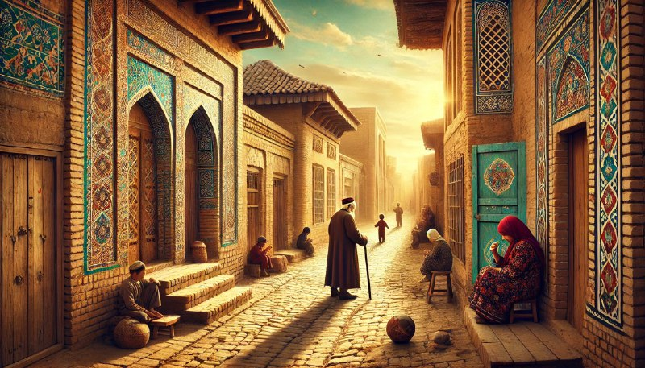

Қайтадан ҳеч нарса ўзгармаган жойга қайтишдан яхши нарса йўқ, чунки айнан шу ерда сиз ўзингиз қанчалик ўзгарганингизни тушуниб етасиз.

Вақт ўтиши билан одам ўзгариши табиий ҳол. Биз янги билимлар, тажрибалар орттирамиз, мақсадларимиз ўзгариб боради. Аммо биз қайтиб борган жойларда ҳамма нарса ўшандай қолса, биз ўша муҳитга бошқача нигоҳ билан қарай бошлаймиз. Илгари бизни қизиқтирган нарсалар энди оддий кўриниши мумкин, ёки аксинча, аввал аҳамият бермаган жойларимизда қадриятларимизни қайта кашф қиламиз.
Болалигимиз ўтган уй, кўчалар, мактаб ёки дўстлар билан учрашув – буларнинг барчаси бизни ўтмишга қайтиради. Бироқ энг муҳими, бу жойлар ўзгармаган бўлса-да, биз уларни бошқача ҳис қиламиз. Чунки энди ҳаётга тажриба билан қараб, бошқа қийматларга эга бўлганимиз аниқ.
Бу каби қайтишлар, аслида, ўтмишдаги хатоларни англаш, ғалабаларни эслаш ва энг муҳими, келажакка ишонч билан интилиш учун керак. Шу сабабли, ҳаётда баъзан тўхтаб, орқага назар ташлаш керак. Ўзгаришларни сезиш учун ўша жойларга қайтиш энг яхши имкониятдир.
Тасаввур қилинг: сиз болаликда юрган кўчаларингизга қайтяпсиз. Ҳамма нарса ўша-ўша: эскирмаган уйлар, таниш тупроқ ҳиди, маҳалладош болалар ўйнайдиган жойлар. Аммо энди бу манзарага бошқача нигоҳ билан қарайсиз. Илгари шунчаки ўтиб кетаётган дарвозалар, деворлар сиз учун алоҳида бир маънога эга бўлиб қолган.
Болалигингизда ўзингизни катта, мустаҳкам ҳис қилган жойлар энди сизга жуда кичик туюлади. Ёшликда аҳамият бермаган нарсалар эса, энди ўта қадрли бўлиб кўринади. Оилавий қадриятлар, дўстлик, соддалик — ҳаммаси шу жойларда қолган. Ҳар бир бурчакда хотиралар яширинган, ўтмишдаги ўзингиз билан ҳозирги ўзингизни солиштириш учун эса шу жойларга қайтиш керак.
Таниш кўчада юриб, ўйлайсиз: “Ҳамма нарса ҳали ҳам шундай, лекин мен ўзгарганман.” Бу ҳиссиёт инсонни ўйлантириб қўяди. Ҳаёт сизга кўп нарса ўргатган, мақсадларингиз ўзгарган, қизиқишларингиз бошқача бўлиб кетган. Бир пайтлар орзу қилган нарсалар энди оддий туюлади, аммо у пайтда ўйламаган нарсаларингизга ҳозир эҳтиёж катта.
Ҳаёт давом этади, одам эса унинг ичида ўсади, шаклланади. Аммо шу кечаётган ўзгаришларни ҳис қилиш учун, баъзан ортга қайтиб, ўзингизни қайтадан таниб олиш керак.